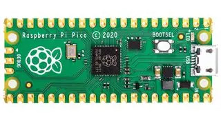

The Pi Pico, two years on
 The Raspberry Pi Pico is a relatively-new microcontroller board based on a chip called the RP2040. It has a more modern, dual-core, ARM-based architecture than the AVR-style devices that are widely used in Arduino products, at a broadly similar price. It has 2Mb of flash ROM, 264kB of RAM, and a rated clock speed of 133MHz. There are about twenty GPIO pins, but these are shared with the SPI and I2C buses, the UART, and other peripherals.
I've been using the Pico for two years now, in a variety of different applications. In this article I summarise how manufacturers have adopted the Pico in the last two years, and describe some of my experiences using it. I'll also make comparisons with Arduino and similar devices from time to time.
Availability and cost
While there have been problems obtaining stock over the last couple of years, at the time of writing there appears to be a good supply -- not only of the basic Pico, but of the wireless-equipped Pico W and similar devices from other manufacturers.
However, there have been significant price increases recently -- as for everything else. The single-unit price for the basic Pico is currently UK£5-6, and for the Pico W £10-12. I've seen the Pico advertised as a "$1 device", but it's a long time since I've seen prices this low -- at least in small quantities.
Capabilities
The Pico has the same kind of I/O support that most microcontrollers have: general-purpose digital pins, SPI, I2C, analog, etc. There's nothing special about the Pico's capabilities in this area, except that it offers a "programmed IO" system that can do digital I/O operations outside the CPU. This system is based on a kind of finite-state machine, and has its own specification language. I've seen some very clever things done with the Pico PIO, but I've not so far been able to understand it well enough to use it myself.
Unlike AVR-based microcontrollers, the Pico's ARM Cortex M0 CPU is much more computer-like. If you're programming it in C or some even higher-level language, that might not be significant. However, the ARM architecture of the Pico is significantly more flexible than an AVR. For example you can, if you need to, load code into RAM and run it. The AVR architecture rules this out completely -- even where there is enough RAM for it to be practicable. The ability to load and run code in RAM opens the way to more computer-like applications than earlier microcontrollers. The dual-core CPU also provides for some interesting multitasking, but this feature has to be used with care to avoid concurrency problems that are hard to troubleshoot.
The Pico has USB host, as well as USB device, support. This makes it possible to interface a USB Keyboard, for example. There's only one USB port, so you won't be able to connect a USB peripheral whilst using the USB port for connecting to a computer. However, depending on the GPIO pins remaining, you may be able to connect a USB-to-serial converter to the UART pins, and connect that to a computer. The Pico SDK has built-in support for doing this.
It's worth bearing in mind that, unlike most of the Arduino range, the Pico requires a 3.3V supply. The board can derive the 3.3V from the 5V supplied by a USB cable but, so far as I know, it can't do the reverse. To some extent you can attach 5V peripherals to the Pico, but this requires some understanding of electronics. To be fair, this is a smaller issue than it was two years ago, because of the increasing number of Pico-specific peripherals that are now available.
The Pico flash -- that part of it which is not required for executable code -- can also be used as persistent storage. It's even possible to put a lightweight filesystem like LittleFS or VFAT onto this storage, to make in manageable. This is the technique I use in my CP/M emulator and my Lua development environment.
The Pico has a software development kit (SDK) for C/C++, or can be programmed directly in Python. I've never really seen the point of programming an embedded system in Python, although I don't deny its importance in education. In any event, my comments later about programming will specifically be about C, which is what I use most often.
Recent developments
The most significant recent development is the introduction of the Pico W, with wireless networking support. I hope that the Pico W won't edge out the original Pico, but the Raspberry Pi Foundation has let me down in this respect in the past. The Pi Zero was an amazing single-board computer that ran Linux, and cost only a few pounds. Cynically, I wonder whether it was discontinued because it was too difficult for people to distinguish it from the new (at that time) Pico? The Pi Zero W is significantly more expensive than the original Pi Zero, just as the Pico W is more expensive than the original Pico.
For the experimenter or hobbyist, the increased price is unlikely to be a deal-breaker -- none of these parts is all that expensive. It just seems wasteful to me, to force people to buy capabilities that they don't actually need.
That grumble aside, the Pico W's wifi is supported both in Python and C, but the networking facilities in the C SDK are very low-level indeed. Doing anything practical will require a significant amount of programming work. Probably libraries and examples will become available in due course.
Pico derivatives
At the time of writing there are at least fifty products on the market that are based on the RP2040 chip. Some of these have similar layout and capabilities to the original Pico, but offer modest improvements (e.g., a USB-C port). Some are much smaller, physically, or have significant enhancements (such as a built-in battery charge manager).
There's an interesting review article covering various RP2040 boards at Tom's Hardware.
So far as I know, none of the derived boards provide more than the 264 kB of RAM of the original Pico. I'm not sure whether it's even possible to extend this RAM, or whether it's a fundamental feature of the RP2040.
The accessory market
One welcome development over the last year or so is the release of accessories and peripherals specifically for the Pico. It was possible -- with care -- to use Arduino peripherals with the Pico, but peripherals are now available that plug directly in the Pico.
For example, Waveshare makes a combined LCD panel and SD card slot, that connects without additional wiring to a Pico. With the addition of a real-time clock module and a USB keyboard, this makes a complete, self-contained computer -- for a total cost of about UK£30.
There are now also e-ink displays, environmental monitoring devices, LED panels, audio DACs, battery power supplies, motor drivers, and a whole slew of silly novelty devices, specifically for the Pico.
I don't think the Pico add-on market is yet as extensive as that for the Arduino, but it's certainly expanded.
Programming in C
The C SDK hasn't changed significantly since the Pico was introduced.
It's still based on the CMake framework and, while I understand the
choice to use it, it still irritates the hell out of me. CMake is fine for
doing relatively simple things of the kind that the CMake developers expected
a developer to want to do. Step away from its preconceptions, however, and
you're in a world of pain. I still haven't figured out, for example,
how to integrate a parser generator based on flex and
bison into a CMake project. Is it possible? Probably.
Documented? Nope.
In fact, leaving aside the horrors of CMake, the Pico isn't hard to program in C. The SDK has APIs for most of the device-specific stuff you'd want to do -- interfacing with SPI, I2C, and DMA; changing the sates of GPIO pins, that kind of thing. Sometimes it's necessary to provide your own implementations of these functions, to squeeze a little extra speed out of them (removing the error checking, for example). Since the SDK is supplied entirely as source code, that isn't hard to do.
The C SDK provides a complete C standard runtime library, based on ARM
Newlib. This has stubs for all the I/O operations that make no sense on
a microcontroller. For example, the open() call compiles,
but does nothing.
This makes it difficult to port code from other projects, which might use these functions. Of course, the code would have to be changed to suit the Pico, but the fact that hundreds of dysfunctional calls all compile makes it very difficult to identify the changes required. On the other hand, the fact that a full library is available, including float-point math if required, does speed things up in other ways.
So, apart from CMake, programming the Pico in C has been fairly productive for me. There are plenty of things to trip you up but, arguably, fewer than there are with Arduino AVR programming.
My overall feelings after two years
I've been able to build some interesting things using the Pico. I find it broadly easier to use than the AVR-based Arduinos and, even though I don't like CMake, at least the SDK doesn't force me to use a specific IDE tool. The Arduino IDE is an awful piece of software, that nobody should be compelled to use.
The 3.3V operation of the Pico continues to be somewhat troublesome, in a world where 5V interfacing is almost ubiquitous. Raspberry Pi peripherals can usually be used with the Pico although, of course, they aren't pin-compatible. Still, there's an increasing range of peripherals specifically for the Pico, so this situation will doubtless improve in the future. If you want to interface an obscure device, however, it will almost certainly require level-shifting and whatnot. For example, I was able to interface an Arduino to an ancient Sun keyboard with no additional hardware, because they both used 5V logic. It wouldn't be all that difficult to do the same thing with a Pico -- should you ever need to -- but it wouldn't be trivial, as it was for the Arduino.
The thing I find most problematic about the Pico is the lack of RAM. To be fair, many microcontrollers have less RAM -- sometimes much less. However, the problem with the Pico is that the power of the CPU -- comparatively speaking -- overwhelms the RAM. I recently had an application that tried to scale large JPEG photos to fit on a smaller display. I probably wouldn't even have attempted to do this with an AVR-based microcontroller, but it seemed tractable on a Pico.
It turns out that it wasn't tractable -- at least, not without a colossal coding effort. The Pico just doesn't have enough RAM for this kind of thing. Well, you could use an SD card as a backing store, or something of that nature; but it's a difficult problem with so little RAM. The Pi Zero which, you may recall, was about the same price as the Pico had two thousand times the RAM -- and it still wasn't overly generous. The Pico has an amount of RAM we haven't seen since the days of 8-bit computing. For many applications, in fact, it's enough -- it's just frustrating when it isn't.
Another thing I've found frustrating about the Pico is the multi-use pins. For example, each of the I2C buses can be mapped to many different pins on the board. This should be an advantage and, in some cases, it is. However, it's very easy to make mistakes when building an application from self-contained modules. If two modules use, say, the first I2C bus, but set different pins, then they will clash. Since a single bus can support a large number of peripherals, it isn't at all uncommon for situations like this to arise. If each bus had fixed pin assignments, then there would be no scope for confusion. Of course, you might need longer wires or PCB tracks to reach the peripherals, but I suspect we're used to dealing with this.
In short, while there are many things I find frustrating about the Pico, I will probably keep using it.